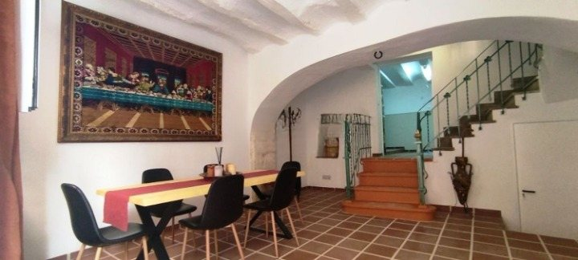
Historic character
Stone, timber beams, arches, traditional floors and the proportions of a centuries-old merchant's townhouse.
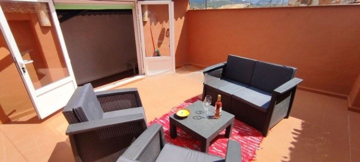
A heritage townhouse in Cocentaina
A restored merchant's house for family and friends, with five bedrooms, historic character and a rooftop terrace overlooking the old town.
Explore the houseWelcome to Casa de Mariola
Tucked among the narrow streets of Cocentaina's historic quarter, Casa de Mariola is a traditional townhouse restored for comfortable modern living. It is a relaxed place for family gatherings, visits with friends and exploring inland Alicante.
This is not a commercial booking site. Availability is arranged personally.

Stone, timber beams, arches, traditional floors and the proportions of a centuries-old merchant's townhouse.
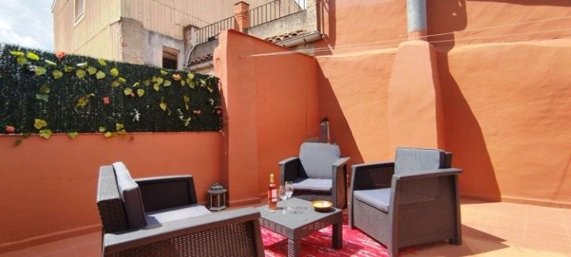
Breakfast in the sun, a quiet afternoon, an evening barbecue and views across Cocentaina's rooftops.
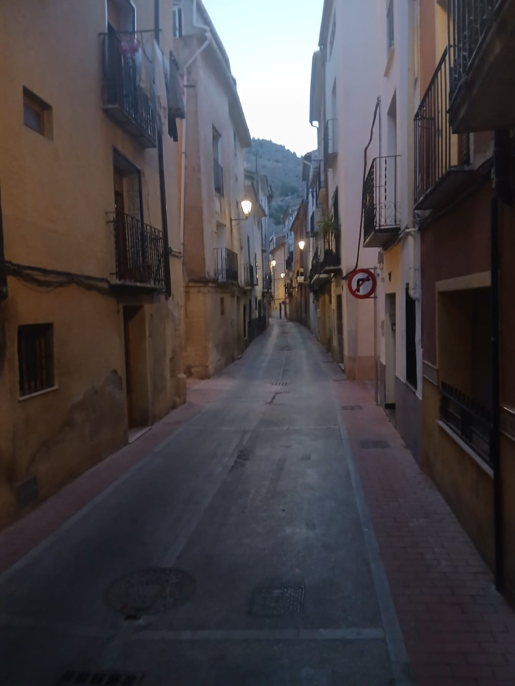
Walk to cafés, shops and historic sights, with the Sierra de Mariola close by and the coast within driving distance.
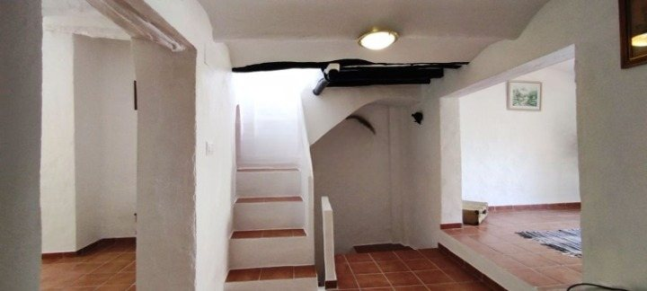
The house
At a glance
Rooms
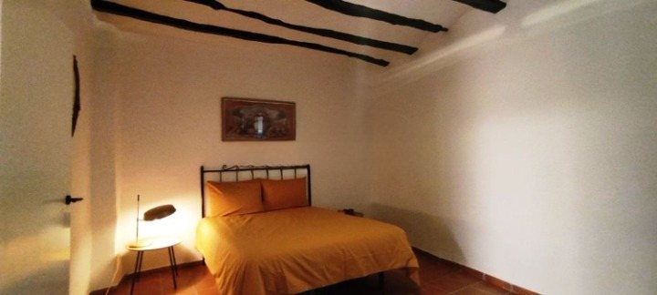
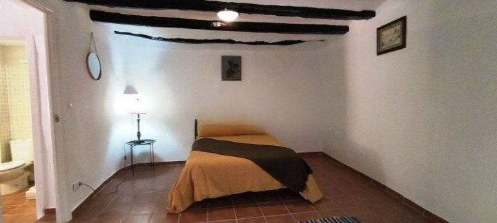
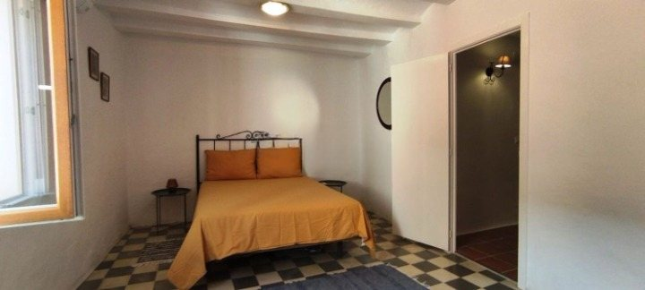
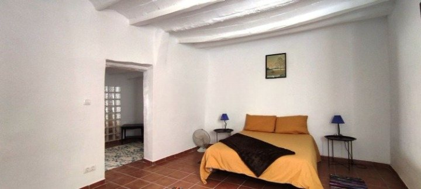
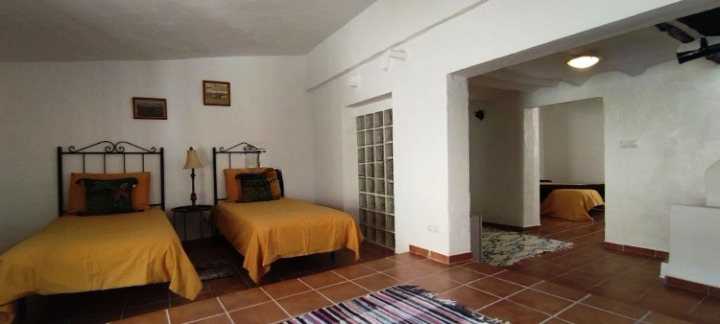
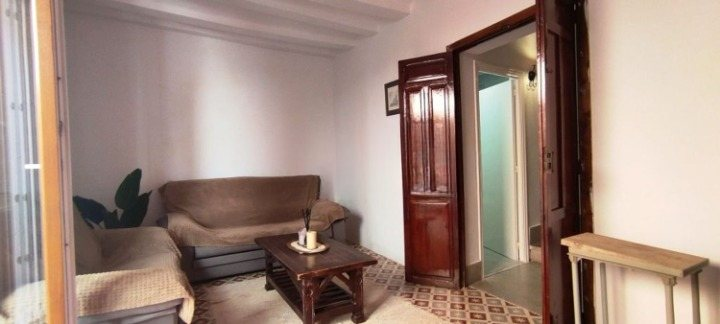
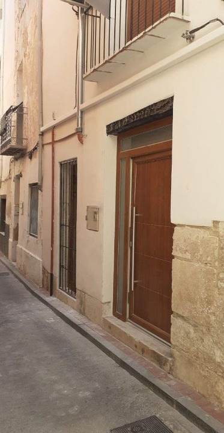
Cocentaina & beyond
Casa de Mariola sits in Cocentaina's historic centre, close to local cafés, restaurants and landmarks. The surrounding area offers walking in the Sierra de Mariola, historic towns such as Bocairent and Xàtiva, and colourful local festivals.
The beaches of the Costa Blanca are approximately 45 minutes away by car.
Planning your journey
Cocentaina lies at the northern end of the province of Alicante, on Spain's south-eastern Mediterranean coast.
The nearest major cities are Alicante, 65 km to the south, and Valencia, 100 km to the north. Both have large international airports with a wide choice of flights throughout the year.
Reasonably priced car hire is available at both airports and is the easiest way to explore the surrounding area.
Public transport is also a practical option. From Valencia Airport, the Metro provides a connection to the city's central bus station, where regular coaches serve Cocentaina. From Alicante Airport, a regular airport bus to Alicante city stops at the central bus station where services to Alcoy run throughout the day. From Alcoy, local buses continue to Cocentaina.
Gallery
Availability
Because Casa de Mariola is shared privately with friends and family, there is no online booking system. Send us your preferred dates and number of guests, and we will reply personally.
Contact
Tell us your preferred dates, the number of guests and anything useful we should know. We will reply personally.
Casa de Mariola
Cocentaina · Alicante · Spain